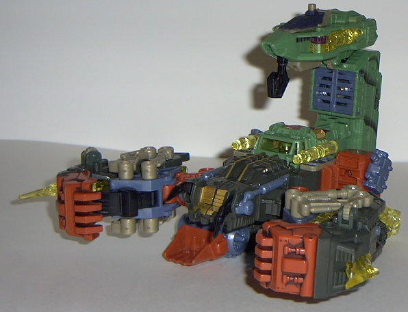
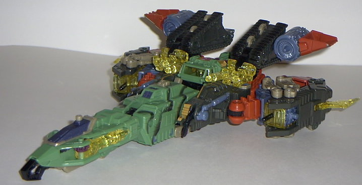
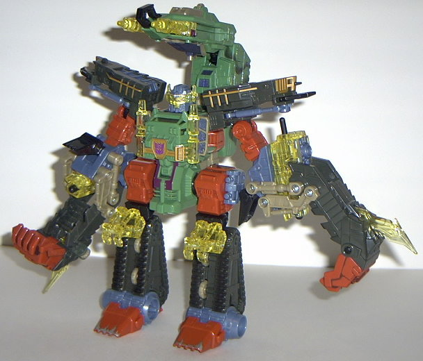
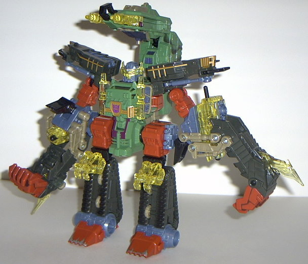

Scorponok
(Energon)
Scorponok
(Energon)


Allegiance
: Decepticon (Terrorcon)
Size
: Ultra
Difficulty of Transformation
: Medium
Color Scheme
: Very dark gray, red-orange,
milky light blue, light jungle green, light grayish brown, transparent
yellow, and some black, dark metallic sky blue, purple, tan, silver, and
dull brownish gold
Powerlinx ports
: 2
Rating
: 9.3
Scorponok's first alt
mode is that of a construction/destruction vehicle that is meant to look
remarkably like a mechanical scorpion. And hot DANG, does this mode look
cool. His large tail has a hook hanging from it that looks both like a
crane arm and a stinger at the same time, which is ingenious. He has HUGE
claws which can open to make them even HUGER and reveal a large missile
which you can fire at unsuspecting Autobots (or Decepticons, if there's
a traitor in their midst). The front of the claws also have a nice "dirt"
paint wash on them. Instead of insect legs, this scorpion has treads with
shovels on the front to scoop up anything that gets in his way. He also
has a see-through cockpit, complete with guns on the sides, in the middle
of the mode, and the "scorpion head" looks like some kind of scrapper on
the front of the vehicle. The mandibles can move up and down, to, if you
want to emulate him shredding something apart. Simply awesome. But then
we get to the electronic sounds. Egads, the SOUNDS. Most of the sounds
are good; if you push back on the tail cockpit, you get a machine gun noise
(because the hyper mode guns swing forward); if you hold the button at
the base of his tail and then do the same thing, a deeper, "moving machinery"
sound will be emitted; and if press the button on the back of the tail,
an "rumbling engine" sound is emitted. However, there is one sound that
completely ruins all of the others. Basically, if you much as LOOK at Scorponok
the wrong way, a "machinery moving" sound will emit from the speaker, and
it gets INCREDIBLY annoying after half a minute or so of playing with him.
Scorponok has been the first Transformer I've ever had where I've actually
taken the batteries out of him. It's a shame. As for the colors, they seem
to mesh fairly well; the red-orange, black, and blue go together very well,
and the transparent yellow is used sparingly enough where it looks alright.
He also has plenty of paint and mold detailing, so no problem there. The
green is the only color of his I'm not entirely fond with; it's a bit too
light. A darker forest green would have been much better.
Scorponok's other alt
mode, a "sand hoverjet" is... actually pretty good for a third mode. It's
not realistic at all, to be sure, and the scorpion hands are painfully
obvious, but other than that it's a serviceable aircraft. It has a nice
long nosecone made out of the scorpion tail, with some appropriate cockpit
windows where needed. He also has small turbines near the rear of the vehicle,
made out of part of the legs. The rear wings are too small- but really,
it's a third mode, it's essentially an extra. I'm not going to be TOO critical
of it. It's good enough where I consider Scorponok to be a true triple-changer,
let's just say that.
 

Scorponok's robot mode
also looks very, very cool. His huge claws still give him a "monsterish"
appearance, as does his big ol' scorpion tail coming out his backside.
He's pretty short for an Ultra, but he makes up for it with his stockiness.
His legs stick out sideways from his body trunk, which I'm not entirely
fond of, but at least it adds to his inhuman appearance a little more.
Still, legs that come out from the bottom of the body trunk would have
been better. The legs look nice and bulky as well- I especially like the
shovel feet, with "worn metal" paint apps on the tips. The claws on his
knees serve no real purpose, but at least they look cool. His face also
is very well-sculpted- it makes him look evil as well as stern, battle-hardened,
and intelligent. The hyper mode mask that flips down over it looks a bit
stupid, though- it magnifies his eyes to the point where they look silly.
He's completely sturdy in this mode, so no problems standing him up ever
occur. His articulation is fairly good- he can move at the hips, knees,
head, tail, and shoulders. His shoulder movement is rather restricted,
though, as he has no elbow articulation whatsoever. So you have to turn
his whole arm to aim his missile launcher, and his shoulder plates don't
move while in this mode either. Other than that, you can get him into a
fair number of poses. Scorponok has quite a few hyper mode weapons, although
they're all fairly obvious- guns pop out of his tail; knifes extend slightly
from the backside of his hands; his claws open to reveal missiles; and
his visor flips down over his head. He also has hip-mounted guns, although
they don't fire anything and aren't made out of the transparent "energon"
plastic like the other weapons. Still, he's certainly ready for a battle.
Scorponok is an excellent
transformer, and looks like a hardened killing machine in all of his modes.
Definitely worth adding to any Transfan's collection- just make sure you
take out the batteries first...
Scorponok Bio
:
MOTTO: "If I do not crush you with my
claws, I will finish you with my sting!"
Scorponok is a power-hungry warrior
who believes that he is the rightful leader of the Decepticon. He can back
up this claim with a three-mode arsenal and a nasty attitude. In scorpion
mode, beware of his huge mechanical claws and energon stinger. In vehicle
mode, Scorponok is a powerful jet and construction vehicle with a talent
for destruction. Megatron beware! This dangerous Decepticon is coming for
you.
Strength: 10.0
Intelligence: 8.0
Speed: 7.0
Endurance: 9.0
Rank: 9.0
Courage: 9.0
Fireblast: 9.0
Skill: 10.0
Review by Beastbot
Back to Transformers:
Energon Index